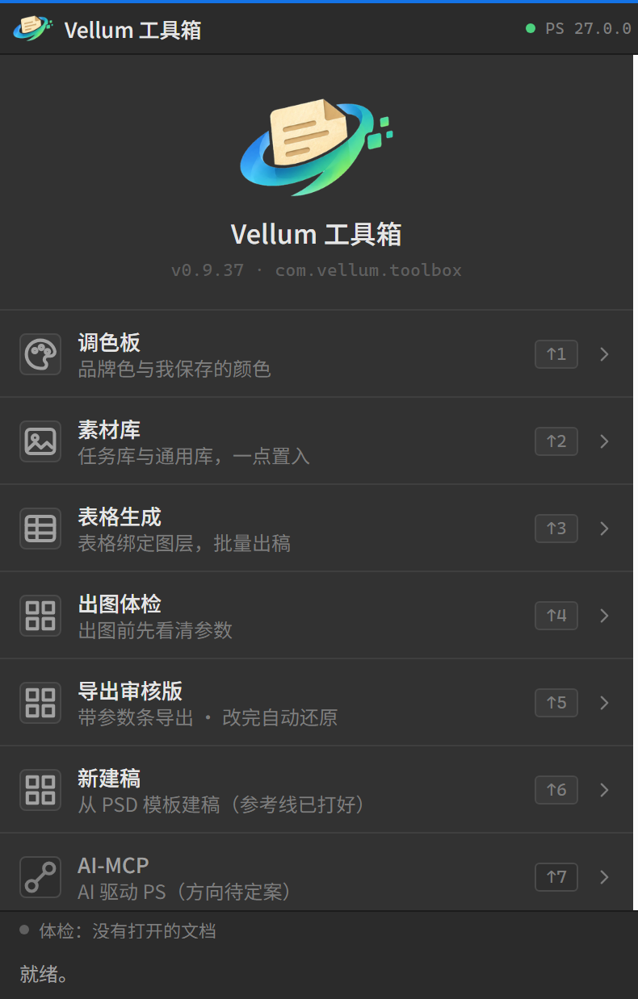

VellumDesk
本地素材与任务工作台
把项目、任务、版本、素材和交付收进一个窗口。文件在硬盘上怎么放，软件里就怎么长。
查看 VellumDesk →Vellum Suite · Local First
VellumDesk 管理任务、素材与每一次交付；Vellum Toolbox 把同一份资产接进 Photoshop。
所有文件留在本地，工作区跟着你走。

Two products / One workflow
Desk 是档案室，Toolbox 是工作台。素材在 Desk 里归档，在 Photoshop 里被直接取用。
本地素材与任务工作台
把项目、任务、版本、素材和交付收进一个窗口。文件在硬盘上怎么放，软件里就怎么长。
查看 VellumDesk →Photoshop 里的 Vellum 入口
在 PS 里直接取用任务库与通用库，套模板开稿，绑定表格批量出稿。不用来回切窗口。
查看 Vellum Toolbox →VellumDesk / 01
项目、任务、版本、三组目录一一对应。扫描磁盘就能把散落的文件认领回来，删掉记录也不会动你的文件。

一稿一个文件夹，回滚只改指针，文件不动。
通用库与 PSD 模板库，参考线、尺寸、出血直接读。
企微工单同步，按版本打包交付，备份留痕。
SQLite + 本地文件，工作区整个文件夹拷走就能换机器。

Vellum Toolbox / 02
一个 UXP 面板，六个工具。素材从 Vellum 库直接置入，表格绑定图层批量出稿，导出前先体检。
ADOBE PHOTOSHOP 25.0+ · .CCX · 未签名
Release notes
两条产品线，各自迭代。Desk 按版本发；Toolbox 随插件包走。
模板库、卡片 / 列表双视图、勾选批量、模板信息卡。一次把「找模板」和「批量干活」补齐。
PS 插件联动、通用素材库、镜像自动同步。Desk 的素材开始流进 Photoshop。
无成品图任务的通用占位封面；丢失角标与编辑按钮不再重叠。
新建稿与 PSD 模板库：模板网格开新稿、按规范建稿（含出血参考线）、512 信息卡。
素材库三段式界面；多层目录 ≤5 层、面包屑下钻；插入面板瘦身。
参数条改版；CMYK 稿改走副本导出，原稿零改动。
导出审核版与成品图；参数条（主题 / 依据 / logo）与大稿自动缩放。
Download / 2026
Windows 安装包约 186 MB；Toolbox 是 Photoshop 的 .ccx 面板，双击安装。两个都留在本地。